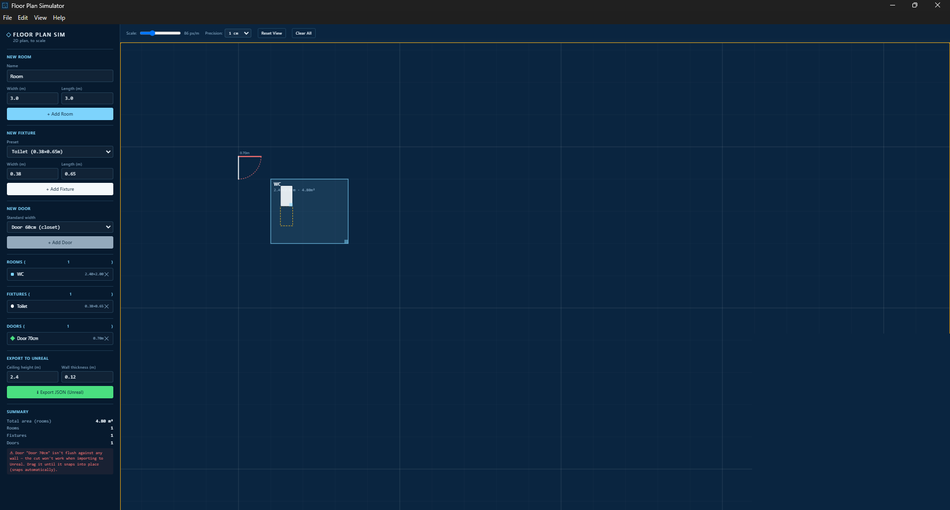
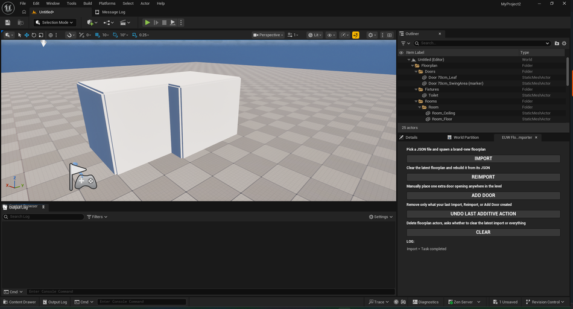

Tools & Level Design · Personal Project
A 2D floor-plan planner that exports directly into a companion Unreal Engine 5 editor plugin, which blocks out a full level from it automatically: walls with real door cuts, floors, ceilings, and fixture placeholders, turning a drawn plan into playable level geometry in one click.


Started as a personal tool: a way to double-check real-world furniture and door clearances before a home renovation, in the browser. It became clear the exact same "2D plan → 3D geometry" problem is the daily reality of level-blockout work in game development, so it grew into a full pipeline: a desktop planning app feeding a real Unreal Engine editor plugin.
The planner started life as a browser-based SVG/HTML/JS tool, later wrapped as a proper cross-platform desktop app with Electron and packaged to a Windows executable. It runs a custom-built 2D canvas engine with real pan/zoom camera state, room and fixture placement with 1cm-precision nudging, and live validation: clearance-zone checking, door swing-radius checking, and overlap detection, all surfaced as warnings in the UI. Everything snaps to the exact same tolerance the Unreal importer expects, so what looks aligned in the planner is guaranteed to import correctly.
On the Unreal side, a dockable editor panel reads the planner's JSON and procedurally builds real-world-scale level geometry. Walls can generate as simple stacked boxes or as a single dynamic-mesh boolean per level via Unreal's Geometry Script API, cutting real door openings with a proper header above each doorway instead of a floor-to-ceiling gap. Shared walls between adjacent rooms are deduplicated and computed once for the whole level, imports are versioned and tracked through undo/reimport/clear, and the whole floorplan groups under one root actor so it can be grabbed and moved as a single object.